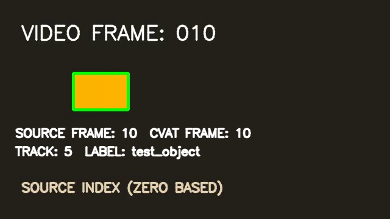

Visual proof / actual CVAT data
Follow the object.
Check the frame.
Choose a sampled source frame, then switch between the decoded MP4 and the annotation retrieved from the imported CVAT task. The green outline comes from CVAT’s returned track.
SOURCE FRAME / 010CVAT verified

Image match MSE is measured between each CVAT-served frame and all 60 decoded source frames after resizing. The minimum occurred at the same index for frames 5, 10, and 20. The annotation overlay uses the second task’s retrieved track.
Indexing / no guesswork
Four representations, one frame value.
At each sampled frame, the burned video label, CVAT frame API, source track, exported XML, and imported track agreed on the zero-based index.
- OpenCV reads the numbered source frame
- CVAT serves its matching frame image
- CVAT XML preserves the frame number
- Imported annotation lands on the same frame
FRAME 010 / EXAMPLE
Visible video labelVIDEO FRAME: 010
CVAT annotation frame10
CVAT XML box frame10
Imported box frame10
Frame shift0 observed